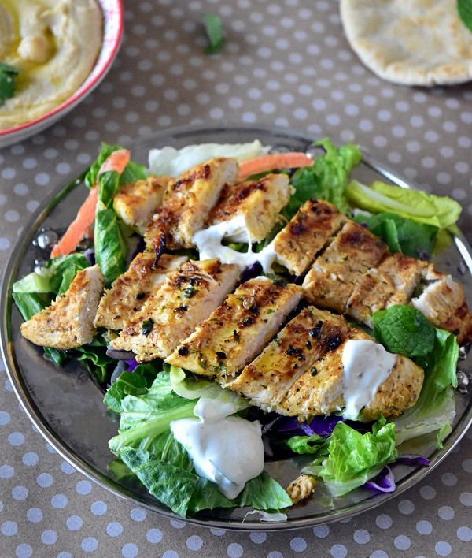

Lasagna

Description
Plat traditionnel italien qui se prépare avec des couches de pâtes superposées, accompagnées d'une sauce contenant des tomates, du fromage et de la viande.
Ingrédient
- 1 kg d'escalope de poulet
Marinade :
- 1 c-a-soupe de coriandre
- 1 c-a-soupe de cumin
- 1 c-a-c de poivre de Cayenne
- 2 c-a-c de paprika fume
- sel
- poivre
- 2 c-a-soupe de jus de citron
- 3 c-a-soupe d'huile d'olive
Sauce au yaourt :
- 250 ml de yaourt grec
- 1 gousse d'ail ecrasee
- 1 c-a-c de cumin
- quelques gouttes de jus de citron
- sel et poivre du moulin
Servir :
- pain pita maison
- une salade libanaise
Prépration
- Commencer par mélanger les ingrédients de la marinade dans un sac ziploc ou un saladier.
- Ajouter les escalopes de poulets. Bien macérer avec vos mains pour que les escalopes s’imprègnent de la marinade.
- Laisser mariner tout une nuit de préférences ou quelques heures (le matin pour le soir).
- Mélanger les ingrédients de la sauce au yaourt dans un bol, filmer et placer au frais jusqu'au moment de servir.
- Chauffer le BBQ ou une grosse poêle pour grillade. Cuire les escalopes de poulet jusqu’à ce qu'ils prennent une belle couleur des deux cotes.
- Placer au fur et a mesure dans une grande assiette et couvrir de papier aluminium pour les maintenir au chaud.
- Découper les escalopes en tranches et déposer sur une grande assiette de service accompagnes de sauce au yaourt de pain pita ainsi que de salade.